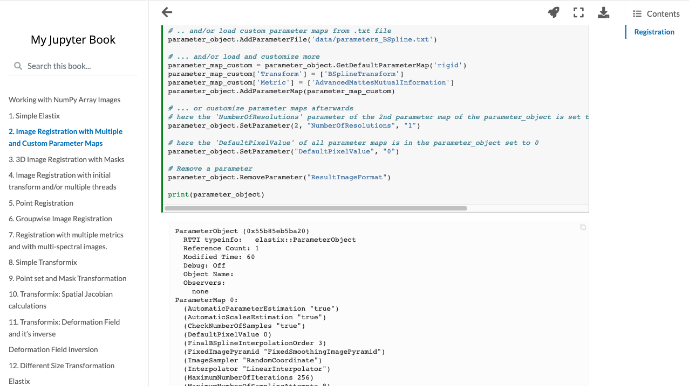

nbmake¶
nbmake tests notebook documentation and is designed for notebooks which are non-deterministic.
Despite being a pytest plugin, nbmake is kernel agnostic. It supports any language.
Quickstart¶
pip install pytest nbmake
pytest --nbmake
Output¶
========================================================================================== test session starts ==========================================================================================
platform darwin -- Python 3.7.6, pytest-6.1.2, py-1.9.0, pluggy-0.13.1
rootdir: /Users/asdf/git/treebeardtech/nbmake, configfile: pytest.ini
plugins: nbmake-0.0.1, xdist-2.1.0, cov-2.10.1, forked-1.3.0
collected 1 item
landing-page.ipynb . [100%]
=========================================================================================== 1 passed in 1.56s ===========================================================================================
Command Line Options¶
Using the following options you can control how notebooks are executed, and configure CI pipelines
!pytest -h | grep -A6 'notebook testing'
notebook testing:
--nbmake Test notebooks
--overwrite Overwrite the source ipynbs
--path-output=PATH_OUTPUT
Create a test report in {path-output}/_build/html.
Requires pip install 'nbmake[html]'
Run Only Against IPYNB Files¶
pytest --nbmake **/*ipynb
Create an HTML Report¶
To view outputs executed remotely, install jupyter-book:
pip install pytest 'nbmake[html]'
Then specify a path:
pytest --nbmake --path-output=.
Output¶
========================================================================================== test session starts ==========================================================================================
platform darwin -- Python 3.7.6, pytest-6.1.2, py-1.9.0, pluggy-0.13.1
rootdir: /Users/asdf/git/treebeardtech/nbmake, configfile: pytest.ini
plugins: nbmake-0.0.1, xdist-2.1.0, cov-2.10.1, forked-1.3.0
collected 1 item
landing-page.ipynb . [100%]
2020-12-11 11:10:48 nbmake building test report at:
file:///Users/asdf/git/treebeardtech/nbmake/docs/_build/html/index.html
2020-12-11 11:10:50 done.
=========================================================================================== 1 passed in 4.26s ===========================================================================================
The report contains only the stripped out and executed notebooks

Run and upload report on GitHub Actions using Netlify¶
- run: pip install pytest 'nbmake[html]'
- run: |
pytest --nbmake --path-output=.
- if: failure()
run: |
netlify deploy --dir=_build/html --auth=${{ secrets.NETLIFY_TOKEN }} --site=${{ secrets.NETLIFY_SITE_API_ID }}
...
- Waiting for deploy to go live...
✔ Deploy is live!
Logs: https://app.netlify.com/sites/festive-payne-ce084c/deploys/5fcf58ec72dc52a440dffcd7
Website Draft URL: https://5fcf58ec72dc52a440dffcd7--festive-payne-ce084c.netlify.app
Note you can also run the tests using nbmake-action for this.
Allow errors and Configure Cell Timeouts¶
nbmake is designed to compatible with jupyter book config (placed in notebook metadata, not the global config.yml)
Parallelisation¶
Parallelisation with xdist is experimental upon initial release, but you can try it out:
pip install pytest-xdist
pytest --nbmake -n=auto
It is also possible to parallelise at a CI-level using strategies, see example
Build Jupyter Books Faster¶
Using xdist and the --overwrite flag let you build a large jupyter book repo faster:
pytest --nbmake --overwrite -n=auto examples
jb build examples
Advice on Usage¶
nbmake is best used in a scenario where you use the ipynb files only for development. Consumption of notebooks is primarily done via a docs site, built through jupyter book, nbsphinx, or some other means. If using one of these tools, you are able to write assertion code in cells which will be hidden from readers.
Pre-commit¶
Treating notebooks like source files lets you keep your repo minimal. Some tools, such as plotly may drop several megabytes of javascript in your output cells, as a result, stripping out notebooks on pre-commit is advisable:
# .pre-commit-config.yaml
repos:
- repo: https://github.com/kynan/nbstripout
rev: master
hooks:
- id: nbstripout
See https://pre-commit.com/ for more…
Contributing¶
Feedback is the best contribution you can make as a user of this tool. Join the Slack channel and bug me (Alex), and raise an issue, even if you think you are the only person with this problem.